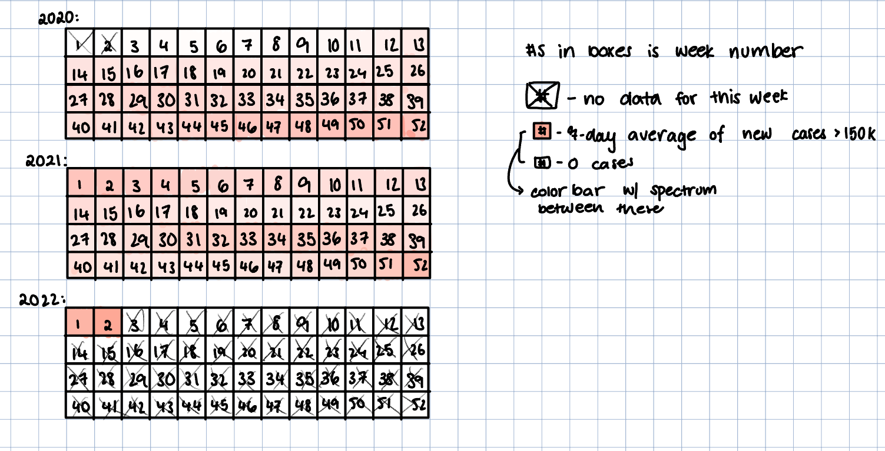
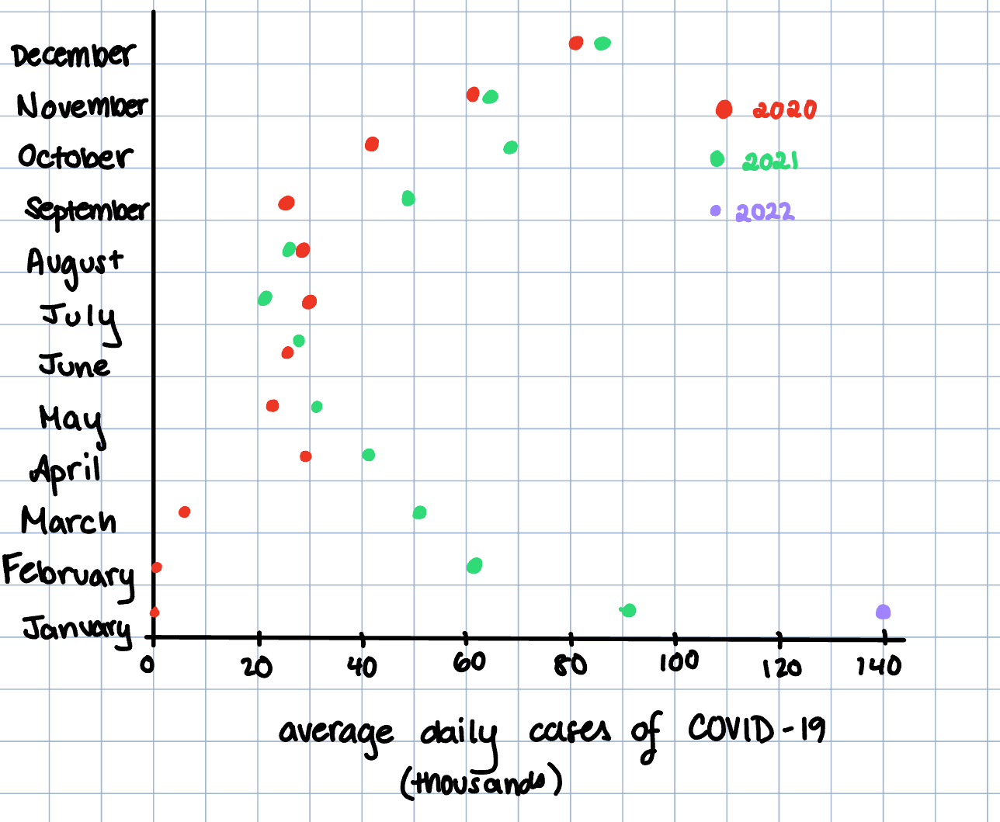

Reading & Critique

Insights about the data/visualization:
- COVID-19 cases follow a seasonal pattern, with surges occurring towards the winter (Dec/Jan) and lower case counts towards the spring and summer.
- Each year's winter COVID-19 peak seems to be higher than the last year's. The surge at the beginning of 2020 was much lower than the surge at the beginning of 2021, which was much lower in magnitude than the surge at the beginning of 2022.
- The Omicron variant's wave is much higher than previous waves, as we see the magnitude of the spiral's size is much higher at the beginning of 2022 than 2021, indicating that the 7-day average of daily new cases during Omicron was much higher than previous variants.
- After a peak, we see a very slow/long, flat decline in the average number of cases. Surges seem to happen much faster, and this difference suggests that while transmission can escalate rapidly, it subsides more slowly.
- The spiral visually connects the pandemic timeline from 2020 through 2022, reinforcing thats waves are part of a continuous process rather than isolated outbreaks.
Design Critique:
The spiral shape makes the seasonal nature of COVID-19 easy to see, since the same months repeat each year in the same positions. Using a 7-day average helps smooth out daily reporting noise, allowing viewers to focus on overall trends rather than sharp day-to-day spikes. The dramatic expansion in early 2022 makes it immediately obvious that the Omicron wave was much larger than previous surges. As a result, the chart is effective at communicating a sense of scale and urgency to a general audience.
At the same time, the design makes some important information harder to interpret. Because the chart uses a spiral rather than a standard time axis, it is difficult to compare exact case levels across different years or even across different months. The distance from the center represents case counts, but there are very few reference points, so readers must estimate values rather than read them directly. It is also not immediately clear where to begin reading the chart or how to trace time forward without carefully following labels. While the spiral emphasizes overall patterns and seasonality, it hides precise comparisons, such as how much larger Omicron was compared to earlier winter peaks. As a result, the visualization is strong for storytelling but less effective for readers who want to make clear, numerical comparisons or draw specific conclusions from the data.
Visualization Sketches

Design Rationale for Sketch 1:
- This sketch facilitates clearer comparison of COVID-19 case levels over time by using a standard time series format, which makes peaks, troughs, and rates of change easier to interpret than in the original spiral visualization.
- A 7-day rolling average is used to smooth short-term reporting noise and weekly cycles, allowing viewers to focus on broader trends rather than day-to-day fluctuations that could obscure the overall trajectory of the pandemic.
- Variant information is displayed in a separate annotation band rather than directly on the line, reducing visual clutter while still providing contextual information that helps associate major surges with predominant variants.

Design Rationale for Sketch 2:
- Organizing the data by week number (1-52) for each year allows for seasonal patterns to be more immediate. Winter weeks align vertically across the years, so viewers can see the recurring surges and their magnitudes.
- Color intensity represents the number of average new cases per week, allowing larger surges to be more visibly striking without needing precise numeric reading. This allows for rapid pattern recognition at a glance.
- This layout makes it easier to spot trends and anomalies over multiple years, providing a clear, compact visual summary of the data. On top of this, the heatmap format reduces visual clutter, and aggregating the data by week removes short-term noise. Missing data is explicitly marked, as the squares are crossed out, and the consistent layout across years helps viewers focus on broad trends rather than track a continuous timeline.

Design Rationale for Sketch 3:
- This design is inspired by the structure of a population pyramid. Placing months on the y-axis treats time as a categorical variable rather than a continuous timeline, which emphasizes seasonal structure and makes it easy to compare the same month across different years. To show the categorical nature of this, the dots are disconnected to enable comparison between different years in the same month/seasons, rather than viewing this as a trend over continuous time. This orientation encourages viewers to read horizontally and directly assess how COVID-19 severity varies by month.
- Average daily case counts are encoded using horizontal position on a shared x-axis, which supports accurate comparison of magnitude both within a single year and across years. Aggregating data at the monthly level smooths short-term fluctuations and reporting noise, allowing the viewer to focus on broad seasonal trends. However, this aggregation also obscures finer-grained week-to-week variation and rapid changes that may occur within a month.
- Color is used to differentiate between years, allowing for clear comparison of seasonal patterns while keeping the visual focus on month-to-month differences. By keeping the mark shape and size relatively constant across years, the design ensures that color encodes only categorical information and does not compete with position as an indicator of magnitude.
Final Visualization Design
![Line-and-bubble chart showing COVID-19 confirmed cases in the United States over a continuous timeline from January 2020 onward. A red dotted line traces the daily 7-day rolling average of confirmed cases, rising through multiple waves and peaking sharply in early 2022. Colored circular bubbles appear once per month and represent monthly average confirmed cases; larger bubbles indicate higher average deaths. Bubble colors distinguish different years. The chart highlights recurring winter surges and shows that later waves have higher case counts but comparatively smaller death magnitudes.](images/image4.png)
Final Writeup
The goal of this visualization is to communicate how COVID-19 case levels evolved over the course of the pandemic while preserving both temporal continuity and seasonal structure. The design uses a continuous horizontal time axis beginning in January 2020 to avoid resetting the narrative at calendar year boundaries, reinforcing the idea that the pandemic unfolded as a single, ongoing process rather than a series of isolated yearly events. A red dotted line shows the daily 7-day rolling average of confirmed cases, providing a smooth but continuous view of short-term fluctuations and long-term trends. Monthly averages are overlaid as colored bubbles to summarize broader patterns and reduce noise, while bubble size encodes average deaths to contextualize surges in cases with their associated severity. This layered approach allows viewers to simultaneously perceive fine-grained temporal progression, recurring winter peaks, and shifts in the relationship between case counts and mortality over time.
This final design directly addresses the main limitations identified in the original spiral visualization. While the spiral effectively emphasized seasonality and dramatic scale differences, it obscured precise magnitude comparisons and made it difficult to follow time sequentially. By unwrapping time into a linear axis, the redesigned chart improves interpretability and supports clearer comparisons across months and years, while still revealing seasonal cycles. However, this choice involves tradeoffs. Summarizing data at the monthly level smooths short-term dynamics and may obscure rapid changes that occur within individual months, and encoding deaths using bubble size sacrifices numerical precision in favor of visual context. Additionally, balancing visual hierarchy required careful tuning so that the dotted trend line provides continuity without overpowering the monthly summaries. Despite these tensions, the final design more effectively supports analytical reading and narrative clarity, demonstrating how critique by redesign can surface and resolve key challenges in communicating complex, time-varying data.